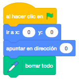
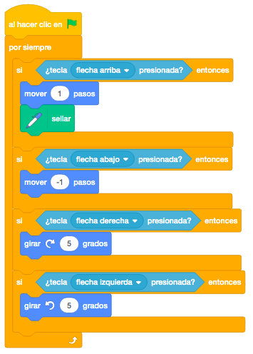
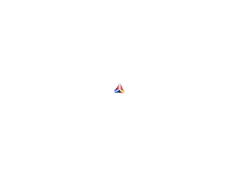

Necesitaremos una flecha roja, una naranja y otra azul.
No será necesario ningún escenario.
Para descargar los objetos necesarios para el juego, lo haremos desde este link. Es un archivo comprimido con 3 objetos. Lo descargaremos y lo descomprimimos en el directorio del alumno.
El juego consiste en hacer un dibujo como en un caleidoscopio, manejando los tres objetos al mismo tiempo.
Nos moveremos con los cursores e ira dejando un rastro mientras nos movemos.
Las flechas deben apuntar en direcciones diferentes al comenzar le juego.
Cuando pulsamos la flecha que apunta hacia arriba, el objeto debe avanzar dejando rastro.
Con los cursores derecho e izquierdo debemos poder girar la direción de las flechas.
Al comenzar el juego los objetos van a su posición original y se borra todo el fondo.
Lo primero que haremos será posicionar la flecha roja en la posición 0 apuntando hacia arriba y como vamos a pintar en la pantalla, la borraremos para empezar con la pantalla limpia.

Ahora programamos el movimiento. Vamos a utilizar el bloque "Sellar" para que se haga un sello del objeto en la pantalla, pero solo lo haremos cuando lo movamos hacia adelante. Hacia adelante lo moveremos en positivo, hacia atrás lo moveremos en negativo y hacia los lados lo giraremos unos grados.

Las flechas naranja y azul también las posicionaremos en la posición 0 pero la flecha naranja apuntará en
dirección 120 y la flecha azul apuntará en dirección -120.
En cuanto al movimiento, será exactamente igual que en la flecha roja.
Podemos hacer un disfraz nuevo a cada una de las flechas que sea de otro color distinto y que al pulsar espacio, cambiemos de disfraz para pintar de otro color.
Y el juego quedaría así.

Para ver el juego terminado pulsa
aquí.
Para descargarte el juego terminado pulsa
aquí.